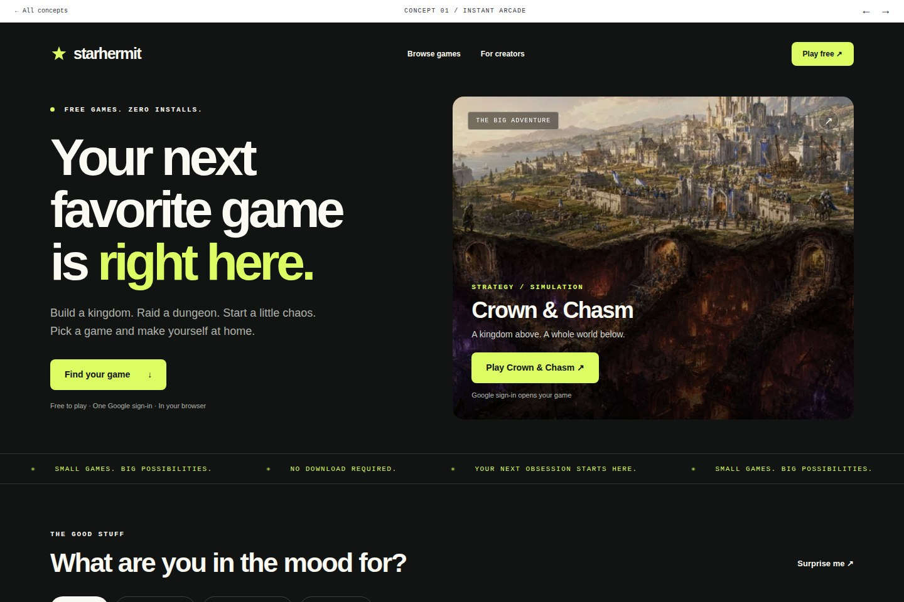
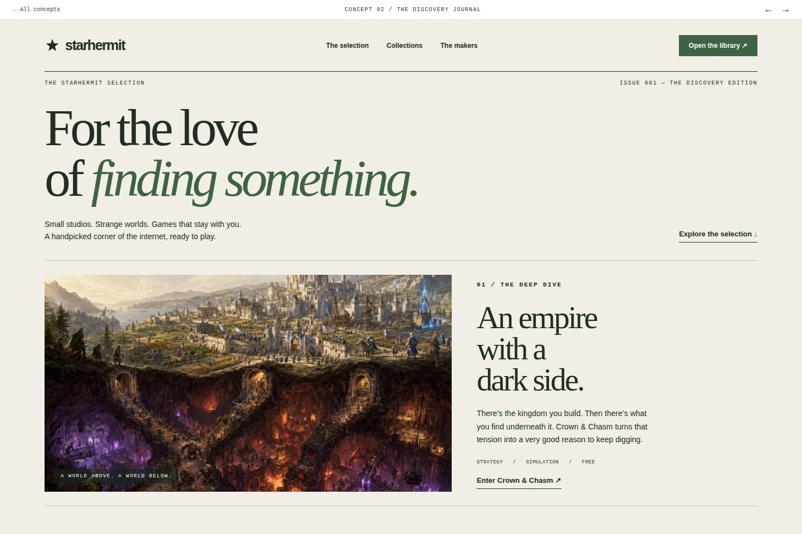
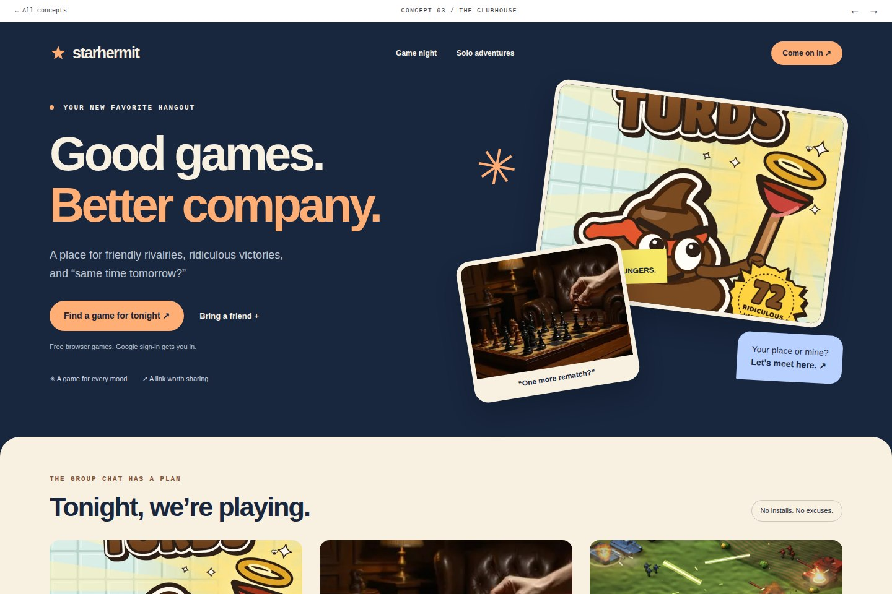
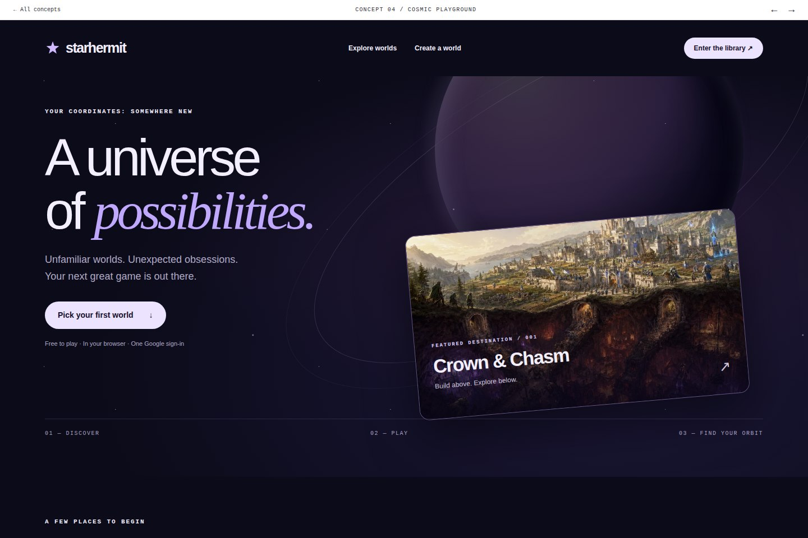
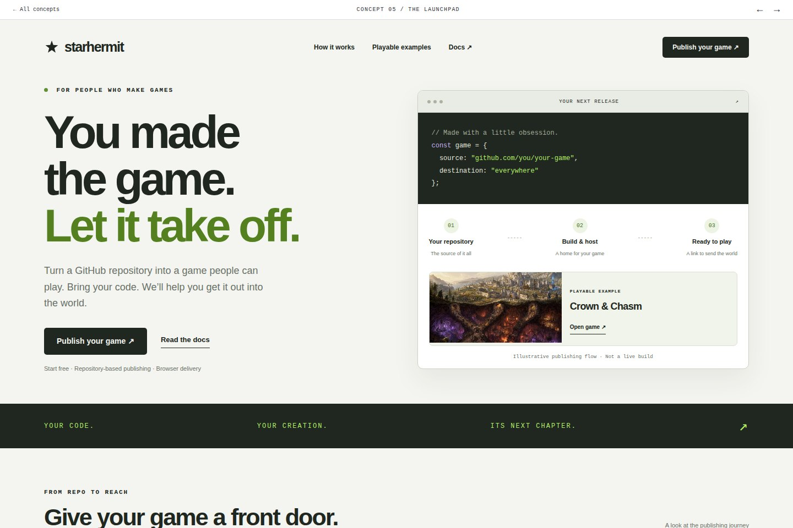

Open concept ↗SAME PLATFORM. FIVE DIFFERENT FIRST IMPRESSIONS.
Where do we
go from here?
Five working homepage concepts. Different ways to look, different reasons to join. Open a page, try it on mobile, or put two directions side by side.
Real game artwork · Responsive layouts · Working play links
Open concept ↗02
The Discovery Journal
A little taste goes a long way.
Give the catalog a point of view.

Open concept ↗03
The Clubhouse
Good games. Better company.
Make playing together the reason to join.

Open concept ↗04
Cosmic Playground
A universe worth exploring.
Make discovery feel unmistakably StarHermit.

Open concept ↗WHAT TO LOOK FOR
Which one makes
you want to click?
Consider the first impression, how quickly you understand the offer, and whether the next action feels obvious.
Notes and shortlist stay in this browser.